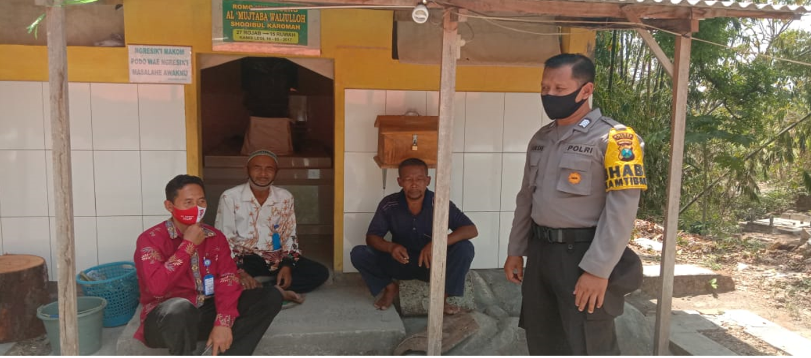
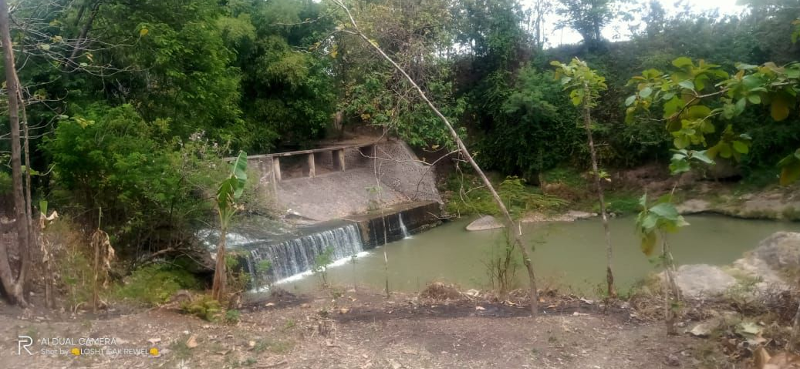
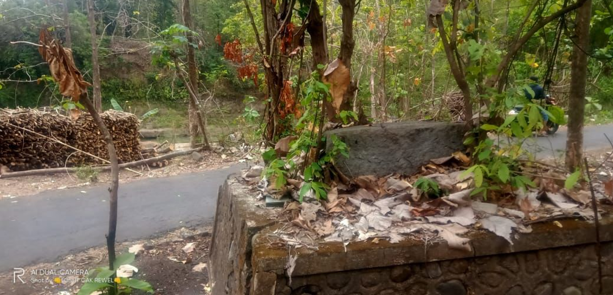

Asal Usul Kelurahan Tinap Kecamatan Sukomoro Kabupaten Magetan
Tinap adalah salah satu nama kelurahan di Kabupaten Magetan.
Batas Kelurahan Tinap adalah:
Utara: Desa Kembangan
Timur: Desa Sugihwaras
Selatan: Desa Pojoksari
Barat: Desa Bulu dan Kedunggowo
Kelurahan Tinap Terdiri dari 16 RT(Rukun Tetangga) dan 6 RW(Rukun Warga)
.png)
Peta Kelurahan Tinap
SEJARAH KELURAHAN TINAP
Kelurahan Tinap terdiri dari beberapa dukuhan: Dukuh Babadan Dukuh Logundeng Dukuh Minongan Dukuh Bon Jeruk. Menurut sumber yang di dapat kabupaten magetan.com asal usul Kelurahan tinap berawal dari yang namanya Kyai Ageng. Kyi Ageng adalah orang yang di yakini oleh masyarakat tinap sebagai orang yang babat pertama dukuh Babadan
Setelah meninggal dunia beliau di makamkan di Kelurahan Tinap, sebelah utara jalan raya, yang pada akhirnya dianggap sebagai Danyang Tinap oleh penduduk sekitar. Maka dari itu makam kyai Ageng tersebut di keramatkan oleh warga sekitar dan sampai sekarang dijadikan Punden oleh pendududuk Kelurahan Tinap.

Makam Kyai Ageng di kelurahan Tinap
Menurut cerita dahulu apabila masyarakat mengadakan acara bersih desa, Kyai Ageng berpesan agar diadakan pertunjukan berupa Tonton Kencreng yanng mana tontonan tersebut sudah jarang ditemukan. Upacara bersih desa tersebut biasanya diadakan secara meriah dan besar-besaran, namun sekarang cukup diadakan selamatan saja.

Acara Bersih Desa Kelurahan Tinap
Adapun nama Kelurahan Tinap itu menurut sumber yang di dapat dari dua suku katakan Ati dan Kenap. Awal kisahnya pada suatu ketika kepala Kelurahan yang pertama mempunyai hajat, terjadi peristiwa yang membuat orang-orang heran bukan kepalang. Pada saat itu tidak diketahui oleh siapapun tiba-tiba ada ikan ati terletak diatas kenap (meja kayu kecil) di rumah kepala Kelurahan tersebut. Dengan adanya kejadian ini kepala Kelurahan memanggil semua pamongnya untuk membicarakan kejadian yang mengherankan tersebut. Hasilnya dari pembicaraan tersebut tidak ada yang diketahui siapa yang meletakkan ati diatas kenap tersebut. Dari kejadian ini dan atas persetujuan semua pamong kepala Kelurahan menetapkan nama Kelurahan tersebut menjadi TINAP, yang di ambil dari penggabungan dua suku kata ATI dan KENAP.
Di Tinap juga terdapat bangunan bersejarah berupa bendungan peninggalan kolonial Belanda
dan batu leper yang konon dulunya batu itu digunakan untuk tempat pembantaian anggota G30S PKI

Bendungan Tinap Jaman Belanda
Batu Leper
Kelurahan tinap dapat mengalami perubahan dari statusnya Kelurahan menjadi Kelurahan setelah kator kecamatan di pindahkan dari Kelurahan sukomoro ke Kelurahan Tinap. Dan meskipun kantor kecamatan ke Kelurahan Tinap, nama kecamatannya tetap Kecamatan Sukomoro.
Sebelum berubah status, Kelurahan Tinap di pimpin oleh:
Sartro Sentono
Sutono
Maryono
Pada masa Maryono ini Kelurahan Tinap sudah menjadi Kelurahan Tinap. Jadi Maryono menjabat Lurah tidak melalui proses pemilihan, tetapi diangkat berdasarkan status mereka sebagai Pegawai Negeri Pemerintahan Daerah. Kemudian Maryono dipindah tugasnya dan di ganti dengan Slamet. Dan Slamet pun menjadi lurah bukan berdasarkan pilihan, tetapi tugas sebagai pegawai daerah.Dengan adanya Kelurahan Tinap berubah menjadi Kelurahan, maka semua aparat/ perangkat kelurahan tidak menerima tanah bengkok, melainkan menerima gaji setiap bulan.